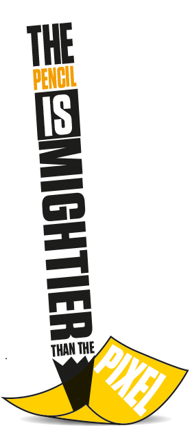
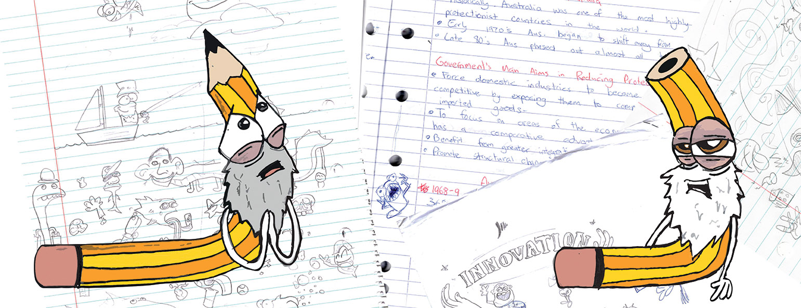
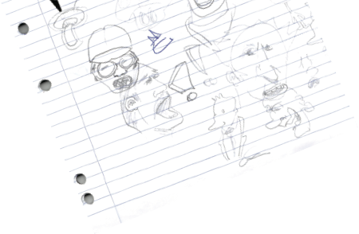
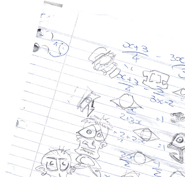

CONTOURCULTURE

Jacob Vecchio
The Pencil is Mightier than the Pixel
An investigation into the state of design and how the humble pencil seems to have been forgotten.I remember being in primary school and receiving my pen license. It was a momentous occasion accompanied by a cute little certificate I could take home to show mum and dad what a great kid I was. Look mum and dad! I can use ink now! How great! So what do I do home to show mum and dad what a great kid I was. Look mum and dad! I can use ink now! How great!
So what do I do with all these pencils I’ve worn down to the stubs? Well damn, I thought. May as well just throw them away. I’m a big kid now right? I’ve got a certificate and everything! The attitude amongst the other kids was something akin to “Let us burn these archaic writing tools in an effigy for the history books!” So I threw them away like a bad habit. Grown-ups didn’t use pencils and that’s what I wanted to be.
Once I got older I found a similar situation occurring in the design field. Computers are an incredible invention. With the right skills and tools you can create just about anything, but what about the humble pencil? Where does he fit in the picture? I don’t want to make the same mistake that I did in primary school and forget how important the pencil is. As a matter of fact, I don’t want anyone to forget. This article is about keeping the spirit of the hand drawn arts alive. Particularly in design where it’s all too easy to open Illustrator and whack out a garbage 10-dollar logo and call it a day.
Aaron Draplin of Draplin Design Company is a devoted supporter of the pencil. He co-founded the brand Field Notes, which are small pocket sized notebooks designed for note taking or for capturing those quick, fleeting ideas. In an interview he was asked pencil or pixel, and his response was detailed but to distil it for this article it came down to “If you start by opening Illustrator, you’re shitting on generations of craftspeople who created things by hand.”
Of course the computer has its place. No designer can work efficiently in the 21st century without one. That would just be ridiculous, but it shouldn’t be step one. The pencil gives amazing creative freedom. I can pour all my ideas on a page in a matter of seconds. If I’m not happy with something that’s okay I’ll iterate and start again. Then once I’ve found the solution I have an amazing path of my mental process. I can go back and think ‘that was a really cool idea back there, I’ll try work on that.’ Boom, next thing you know you have got a tonne of different concepts to show the client.
"Of course the computer has its place. No designer can work efficiently in the 21st century without one."
The craftspeople that Draplin mentions, referring to the household names of graphic design like Bass, Rand, Glaser and Vignelli. It can be almost certain that they shared the same view. Saul Bass urged the next generation of designers to learn how to draw. By not learning how, he knew people would bend over backwards to get around that crippling disability to creativity instead of facing the problem directly. We can see this now with younger designers using computers to avoid directly solving the problem at hand with pen and paper. Bass became not only well known for his work in film but in graphic design, delivering high quality work in advertising and corporate branding to a multitude of clients. His corporate logos have lasted on average 34 years, and 13 of his logos are still active (including modern revisions). It just goes to show Bass’ ability to keep ahead of the curve and produce long lasting logos. With that kind of longevity surely those guys must have been doing something right. No computers, just pen, paper and a pair of hands.
 There is also the tactile experience of putting a pencil to paper that can’t be replicated on a screen. Draplin mentioned this in his interview saying how if he was scared with a big project, the warm feeling of the paper relaxed him and helped him approach the job at hand. If putting pencil to paper allows for more creativity is up for debate but it’s worked for many successful designers. I just hope future generations don’t forget where we came from and pencils don’t become a niche product like say vinyl records or worse, obsolete like floppy disks.
I hope in the near and distant future they are still a staple of any self respecting designers toolbox. So we need to move forward but also remember where we came from. Remember that before we run off with our pen license, we think about how much the pencil has taught us and harnessed our creativity. I really hope we don’t forget that. Primary school pen license’s be damned.
"If you start by opening Illustrator, you’re shitting on generations of craftspeople who created things by hand."